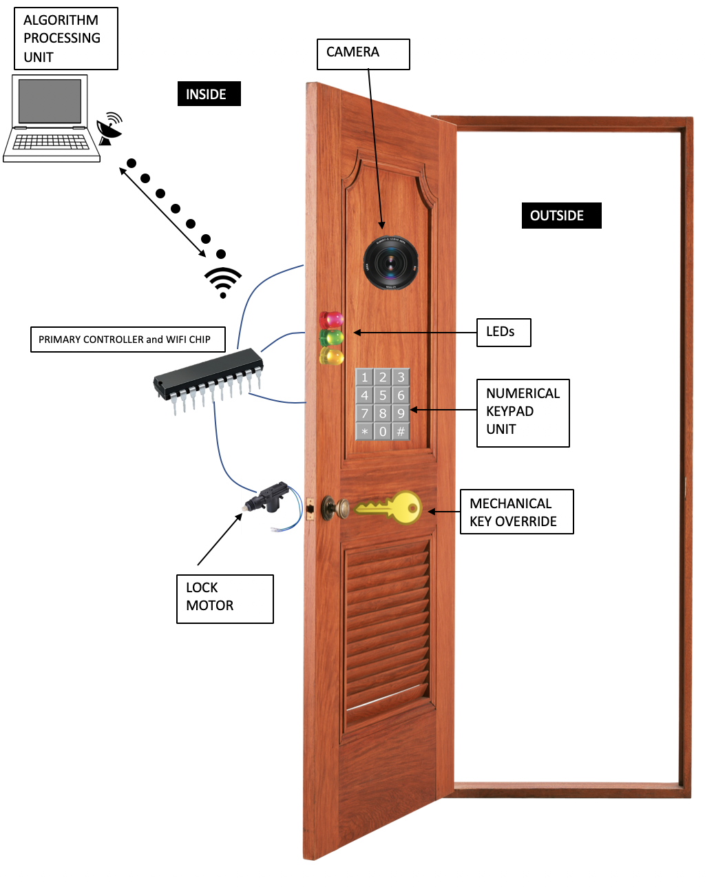
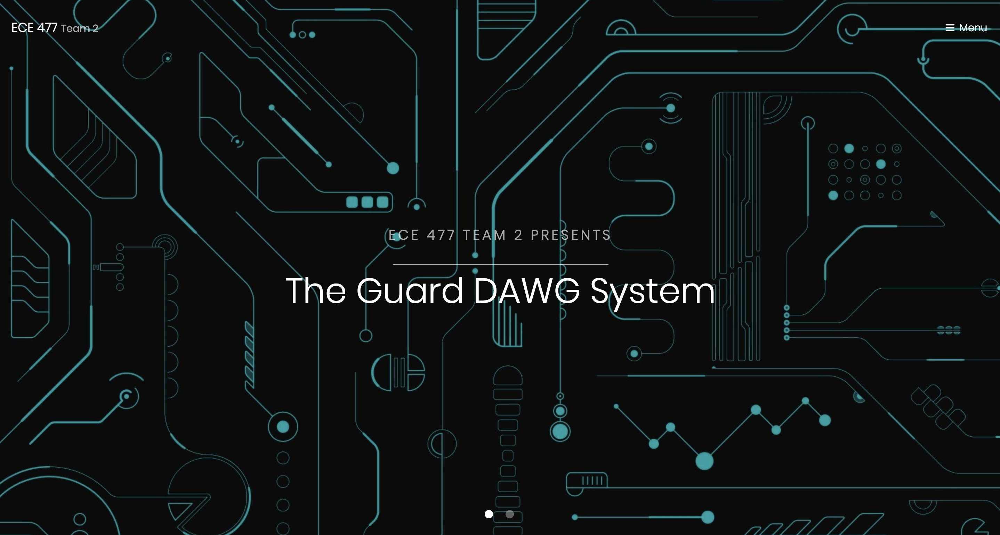
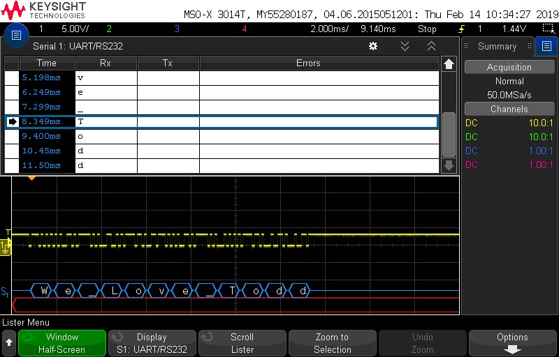
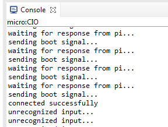
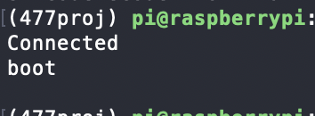
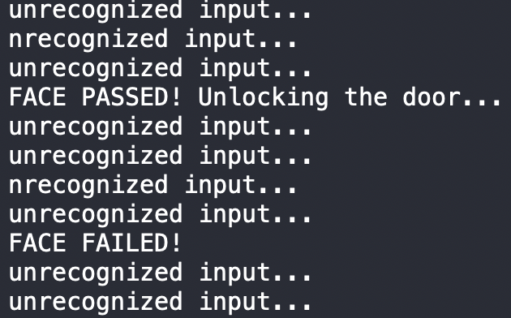
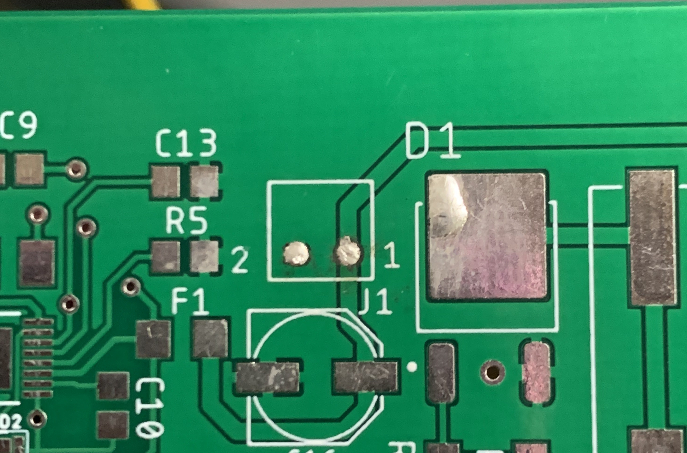
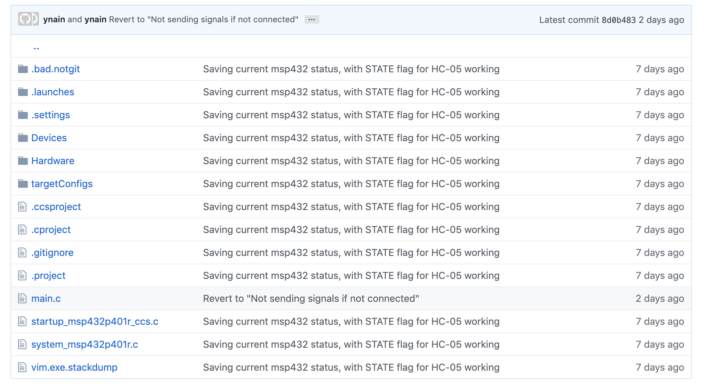
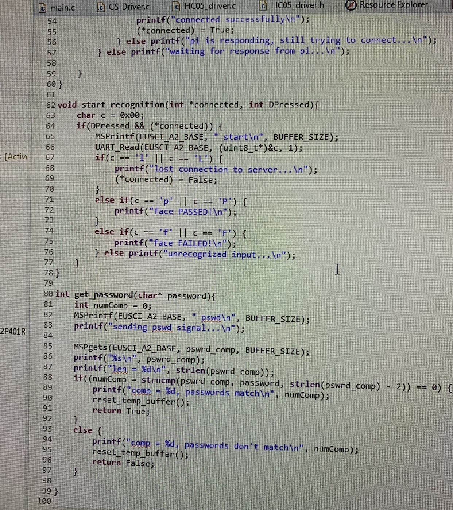
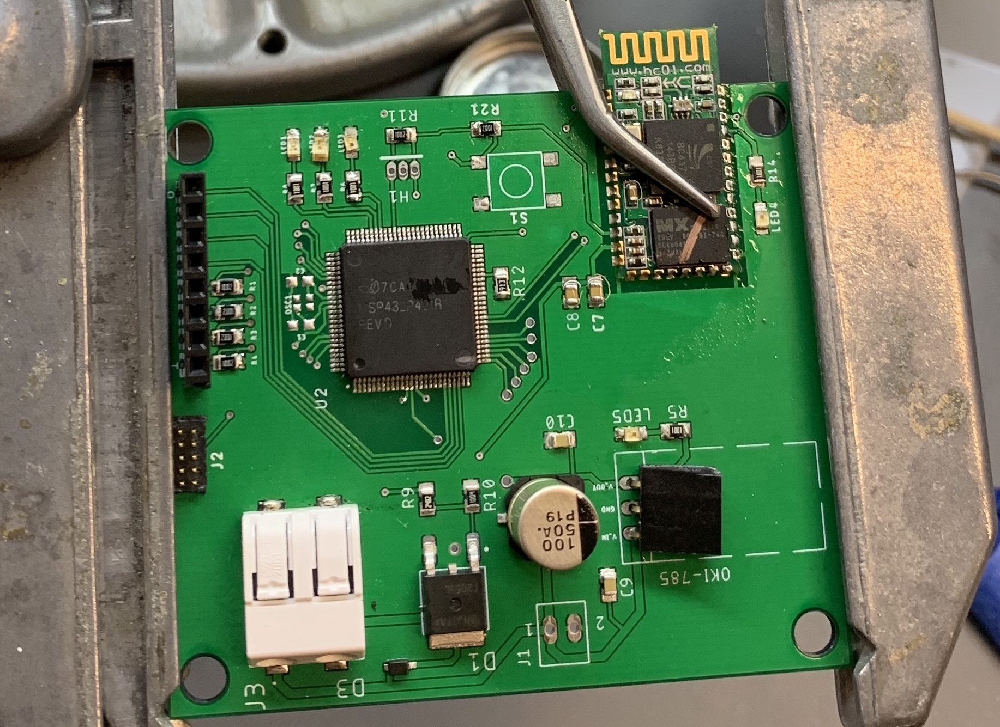

 Figure 1.1: Door Visual
Week 1:
Date: January 11, 2019
Total hours: 7
Description of Design Effors:
Worked on the Final Proposal and contributed to the website template setup based on the resources given.
Revised the PSSC's along with the team.
Setup GitHub's remote and local repositories for the better code management. Discussed the ordering of system componentes
needed for the project. Created a system diagram that was part of the Final Proposal document.
 Figure 2.1: Website Screenshot
Week 2:
Date: January 14, 2019
Total hours: 8
Description of Design Effors:
Updated the PSSCs on the website. Looked over the hardware we need to order.
Made an initial list of software problems the team needs to solve.
Worked on the team website template taken from the free web template resource. Setup all the
html files for the team members for easier progress journal editing.
Contributed to writing Project Functional Specification document.

Figure 3.1: Devboard for MSP432P401R
Week 3:
Date: January 22, 2019
Total hours: 8
Description of Design Effors:
Worked on the Gantt chart for the team and specified the milestione dates for Electrical & Mechanical, System Integration and Software Components.
Started on the Microcontroller State Machine diagram. Installed the CCS Software for the MSP432P401R Microcontroller and tested the blinking LED.
Revised the third PSSC - changed the interface from I2C to UART. Created the Gantt Chart in order to track team's progress.
Worked on the Component Analysis that included discussing the difference between selected hardware for the project. The hardware
includs Raspberry Pi 3 Model B+ and the main SCB component, MSP432P401R Microcontroller and SparkFun nRF52832 Breakout Bluetooth module.

Figure 4.1: Microcontroller Code
Week 4:
Date: February 1, 2019
Total hours: 10
Description of Design Effors:
Working on setting up the communication between the MSP432P401R microcontroller and the HC-05 Bluetooth chip through the UART interface.
The team found the useful code that allows mentioned devices to interface between each other. I had some trouble configuring the microcontroller
IDE project settings so it would work with the provided code. I was able to get the communication going between the chip and micro.
Also keeping the website up to date with the fixes that need to be made in order for it to look pretty and consistent.
That includes checking if the progress reports are up to date for every team member, maintaining the GitHub repo for the cite.
Looked over the Gantt Chart
in order to update the completed items on it. We are right on track!

Figure 5.1: Keypad Column Outputs With Pull-down Resistors
Week 5:
Date: February 4, 2019
Total hours: 15
Description of Design Effors:
Was working primarily on getting the microcontroller functioning with the rest of the hardware. I got the numberpad
to work with the micro - it now receives the correct signal from the corresponding pressed button (Figure 5.1). I have made the circuit
based on Todd's suggestion with the pull-down resistors in order for the micro to not catch any noise coming from the inputs.

Figure 5.2: Debugging UART Waves
Have also worked on the data transmission between the micro and the HC-05 Bluetooth module through UART interface.
I did set up code that initializes the UART interfacing and communication between the devices. I based all the code on the
GitHub repository library that was created for this particular chip interfacing. I was able to also setup the analog debbugging
circuit with KeySight Oscilloscope in the lab (Figure 5.2). It helped us to see whether the micro is sending correct data through the channel.
I also worked on the Mechanical Overview doccument where I compared the housing of the current products on the market with the Project
Device that we are building. Me and Yash have also worked on the cad model of the housing that we created in SolidWorks.
Finally, I keep maintaining the website to make sure it's up to date with all the documents and progress reports from every single Team member.
Week 6:
Date: February 14th, 2019
Total hours: 25
Description of Design Effors:
So this week was mega productive. At first we were unable to get any meaningful data to be sent to and from the micro.
It was very frustrating. Multiple attempts of reading stuff with Oscilloscope were not successful. Days passed filled with
failures upon failures. But then I started attempting to connect to the Bluetooth Chip HC-05 with Raspberry Pi directly via
the supported Bluetooth protocol on Pi and the PyBluz module we used earlier (terrible API and documentation, by the way).
I was able to exculde the number of other different bluetooth modules in the room and find the one that belongs to our team.
Basically, I was able to narrow the pool of MAC addresses down from 4 to the one and only we need. After mapping the MAC address,
I started trying to send the data to the Bluetooth module and see how it would react.
 Figure 6.1: Oscilloscope Output in UART Viewing Mode
I had a lot of trouble figuring out the pace with which the characters are sent. First, they were really scarmbled so I knew that
the baudrate was correct, something else was wrong. So I ended up putting a physical delay in the Python Script between the packages
that are sent. I don't think it's a fault of the HC-05 chip, I believe it's PyBluz API that lacks functinality.
I was able to check the data that was sent through the Bluetooth protocol from Pi to HC-05 chip via Oscilloscope probe
connection in the UART debugging mode. It was a great success! (Figure 6.1)
Fortunately, it's not the end of the whole deal here. I was able to also configure the micro to get that data from HC-05
through the UART interface. So, now we have a fully functioning commuication line between the Pi, HC-05 and our micro.
And we are happier than ever :)
 Figure 7.1: Micro Console Output
Week 7:
Date: February 22nd, 2019
Total hours: 18
Description of Design Effors:
This week I was focusing more on figuring out the Microcontroller - Raspberry Pi communication in terms of what one needs
from the other. Me and Ian have talked throught the commuication patters that we are going to stick to throughout the development
process from now on. We agreed that the micro has to send the boot signal to the pi in order to indicate low power mode exit. Also we have
decided that the micro needs to know whether the server connection (where whole face recognition process happens) is lost in order to let
the user know that the only options now are Mechanical or Keypad overrides.
 Figure 7.2: Pi Console Output
I got the boot message to send to the pi (Figure 7.1) and get the correct responce (Figure 7.2), now we need to figure out whether we need Threading or simple interrupts for our micro in order to interface
with the keypad and bluetooth chip at the same time. Me and Evan are going to be working on it further down the line as well.
Overall, stuff I did this week goes off of the things I have accomplished last week with the Bluetooth connection. To recap, right now
I am making the system come together and having proper commuication established between all the components.
 Figure 9.1: Micro Console Output
Week 9:
Date: March 8th, 2019
Total hours: 6
Description of Design Effors:
This week we were working on the general API for the micro and Pi communication. Me and Ian were wrapping up things on that.
We have integrated a better API that allows us to unlock the door when the face is recognised. These past few weeks were mostly
focused on the PCB design which was primarily Yash's job. Next step is getting the PCB and starting the integration of the system.
Figure 10.1: Agh... España
Week 10:
Date: March 11th, 2019
Total hours: 0
Description of Design Effors:
Thought I'd share this photo I took.
Back to senior design now...
 Figure 11.1: Ruined PCB
Week 11:
Date: March 22th, 2019
Total hours: 5
Description of Design Effors:
After we got our PCBs in, I tried helping Yash to solder them up as well helping with continuity tests. I ended up ruining one of
the PCBs by soldering the through hole because the wire fell out of the hole and the solder got into the tiny space. We ordered 10 PCBs
so we can afford to sacrifise one or two.
The plan for this weekend is to help out to actually solder the components well and not ruin another board. :(
Also, I will be programming the chip once Evan is done with timer module.
 Figure 12.1: Always use Git...
Week 12:
Date: March 29th, 2019
Total hours: 15
Description of Design Effors:
Worked more on integrating all the pieces together. Now we pretty much have full application going in the system
with the microcontroller, the Pi and the server that does facial recognition. Right now we're pretty much done with the
keypad integration and bluetooth commuication that allows us to have a nice user interface of the system that's ready to be
put on the actuall micro on the PCB.
The disaster happened though. We lost some of our code so we have to spend some time rewriting it.
It's not that bad... But it's sad. We used git, yes. But it got all messed up. Lessons have been learned. It's fine.
There's nobody to blame here.
 Figure 13.1: Micro Password Code
Week 13:
Date: April 5th, 2019
Total hours: 24
Description of Design Effors:
As per Prof. Thottethodi suggestion, we incorporated the password protection to our system. The only way the Pi can
connect
Worked on creating and testing the password protection part for the microcontroller < -- > Pi connection via HC-05. For now we're
testing it with plain text password, but later we might go with storing and sending a hash at least.
Right now we are putting our PCB together and flashing the code to it. As well as we are making the progress with packaging.
P.S. TI's Code Composer Studio has been giving us a hard time in terms of setting it up after we lost our code last week.
So, some of my time was wasted again because I was setting up the environment.

Figure 14.1: Micro and Board
Week 14:
Date: April 12th, 2019
Total hours: 20
Description of Design Effors:
This week was primerily focused on getting the micro on the PCB to program. I was helping Yash to solder programming header onto
our testing PCB. With the combined effort of Joe, Todd and Yash, they were able to figure out why our micro on the PCB was not
programming properly. The issue was that we had a pin high when it was supposed to be low. After Todd helped us solder it up, Yash and I
went ahead to tried programming it.

Figure 14.2: Toggle Test
We succeeded!
We were able to toggle the pin on the micro and read the correct voltage output on the scope as well. It was a pain to
figure out the software too, but we managed to test the connection and reset the micro correctly after connection
integrity test was passed. We will use this board to get our
prelims checked off. The plan is to populate it further and get an actual code on it.
After we get our prelims all checked off, we will start putting the system together so it will look closer to its final
form. We will probably order the PCB itteration #3 with a few fixes integrated.
Figure 15.1: Unlocking Demo
Week 15:
Date: April 16th, 2019
Total hours: 40
Description of Design Effors:
Evan and I were working on some additional keypad code this week. We want the system to be able to change the door pascode
to the one the user wants. It is working correcly on our board already. Yash and I were working also on the PCB itself. He was finishing
soldering the remaining parts, while I was consulting with Joe and Todd about certain soldering questions I had (primarily asking them
about desoldering one of our HC-05s from a bad PCB). We were able to get the motor driver working with the good passcode in lab.
So we checked off another one of our PSSCs to make us pass prelims.
Figure 15.2: Working Board
Yay!
 Figure 15.3: Soldering New Board
Now our focus is to get the bluetooth part functioning correcly and we are good to go! My personal goal is to look over the code again and
test it without the output console for the entire system.
Update: I have soldered a new working board together (Figures 15.2 & 15.3) in a day and tested all the components on it. It programs, the bluetooth and uart connections are functioning as expected!
Now the new, and final goal, is to get the packaging together for the final demo and PSSCs check-offs.